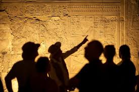

Lost in the Pharaoh's Embrace: An Ancient Journey
Stepping inside the Great Pyramid wasn't just walking into a structure; it was stepping into a whisper from millennia past. The air itself felt thick with history, cool and still, a stark contrast to the blazing Egyptian sun outside. Imagine the narrow, ascending passageways, so precisely cut that you can almost feel the presence of the ancient builders in the shadows. As you climb deeper, the sheer scale of human ingenuity unfolds around you. The massive stone blocks, each weighing tons, fit together with an impossible precision, forming silent, echoing chambers that lead to the King's and Queen's burial places. It’s dark, yes, but the occasional shaft of light, or the glow from a guide's lamp, illuminates hieroglyphs and carvings that tell stories older than written history itself. The Grand Gallery, in particular, is an engineering marvel that defies modern understanding – a long, steep corridor with a soaring ceiling that seems to pull you upwards into the heart of the monument. You can almost hear the ceremonial footsteps of pharaohs and priests. This isn't just a tomb; it's a profound journey into the human spirit's ambition and belief in the eternal. If you seek to connect with the very essence of ancient civilization, to feel truly humbled by the monumental achievements of humanity, then you must descend into the silent, awe-inspiring depths of the Great Pyramid. It’s an experience that transcends time, leaving you with a sense of wonder that lingers long after you emerge into the light.
Torna a gli articoli